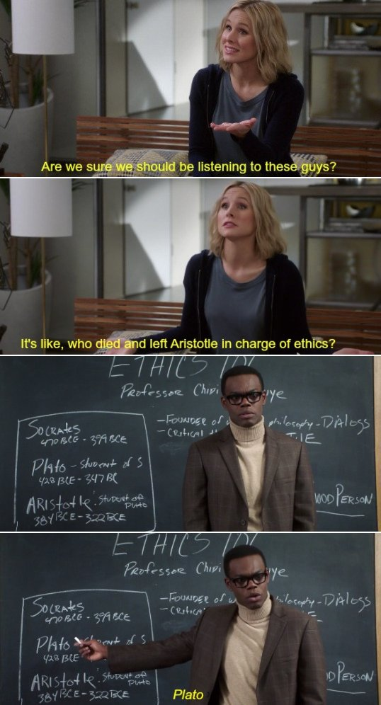

I'm Reda 👋🏾 (pronounced F̶l̶o̶rida). I'm 32, a fraternal twin, and a friend recently described me as "the most London person" he knows, which I think is a compliment‽
I'm interested in food, baking, tech, gardening and yoga. I also enjoy interior design so took the lead on my parents' kitchen renovation a few years ago and DIY-ed their kitchen table. I take pride in making things and I feel that learning to code will empower me to make more.
My favourite TV show is 'The West Wing' (I quietly amuse myself by finding ways to quote it in casual conversation) and my favourite currently-airing show is 'The Good Place'. It's equal parts surreal, smart and stupid as it explores what it means to try and be a decent person.
Last year I taught myself how to solve a Rubik's Cube. You can too, if you fancy it. You learn a bunch of algorithms then apply them - like programming, but not as creative. I've got my time down to 3 minutes! I like to solve problems, am dedicated to improving my skills, and I persevere when faced with a challenge. I think these attributes will help me make the most of an opportunity like Founders & Coders which I appreciate is an intense programme with a steep learning curve.

Kristen Bell & William Jackson Harper in 'The Good Place'
Experience
I read English Literature and Creative Writing at university and sort of fell into the PR industry in 2009. During my first job, I devised and organised a debate which trended #2 on Twitter (#1 was the Budget announcement). With an affinity for tech, I went on to build a career in digital, social and integrated marcomms at a global communications agency. I advised brands like Samsung, Nokia, John Lewis, and Lloyds, as well as pro-bono clients such as Jo's Cervical Cancer Trust, how to navigate the online space. I took a data-driven approach to my work, underpinning the strategy with research and audience insights to meet comms and, ultimately, business objectives. I believe using Google effectively is an underrated skill! I hired and managed two excellent people, facilitating their training and developlment, and also won the company's 'Entrepreneur Award'. I'm grateful to have been involved in a host of exciting projects. A particular highlight was partnering with the grandson of Jacques Cousteau, Fabien, as he lived and studied the ocean floor in an underwater lab for 31 days. He used our client's smartphone to document and share his experience in real-time and Skype with kids in classrooms over the world.
I took a break to go travelling and had an enriching time exploring the culture of Vietnam, Cambodia, Marrakech and Turkey. Back in London, I felt a real need to align my work more closely with my values and so jumped into a role at a responsible business charity. I worked primarily in the central communications team and acted as an advisor across the organisation. I led the digital approach for the company's flagship events, Responsible Business Week and the Responsible Business Awards, raised awareness for Earth Overshoot Day and worked on campaigns to promote diversity in the workplace and reduce barriers to employment for ex-offenders. I felt passionately about the causes we were strengthening and the people I worked with, but it had been dawning on me for a while that marketing wasn't what I wanted to do with the rest of my life...
''Reda is sharp, motivated, hard-working and has an excellent (if somewhat pixie-ish) sense of humour... One to watch.''
I was 3 when I wrote my first line of code - to launch a QBASIC game called ‘Gorillas 2’ on MS-DOS on our black and green PC terminal. It was thrilling to see a handful of characters unlock an entire world built on a billion more. I love the way programming combines logic and creativity. I have A-levels in maths and physics and it feels great to be flexing those muscles again. I would love to have learnt programming in the way I learnt English and Urdu as a kid, but I don't think it's too late to become conversant and work towards a level of mastery. I'm excited to give it a proper go.
I've previously dipped in to learning HTML, CSS, Javascript and Python through Codecademy and Khan Academy, and messed around in Google Code Playground (RIP) and Google Charts.
I felt code-adjacent in many ways. I was always inquisitive; I'd inspect the source code of websites just for fun, trying to parse the impenetrable jumble of characters. At work I built a KPI dashboard using excel functions to automate the data processing and generate graphs. Making a laborious manual process much more efficient was hugely gratifying. It was essentially programming, but I didn't think of it that way at the time. I'd conduct on-site SEO audits and explain the importance of meta-data to colleagues and clients, and I'd work with developers and designers to build a client website. Following a health setback and some serious soul-searching, I now know that I want to learn to code seriously and pursue a career as a full-stack developer.
Why FAC?
Founders & Coders has inspired me to pursue this path. My friend was part of FAC14 and recommended it to me as a career change option, extolling the virtues of the culture and pair programming. Learning through collaboration and being able to give something back is a wonderful model. I hope to use my skills to bring empowering ideas to life, and I'm particularly keen to see more kids becoming digitally literate and more women of colour represented in the tech industry.
I felt pretty green coming into the pre-reqs process. I've enjoyed refreshing my knowledge and have learnt so much more already.
Collaboration and Peer Learning
I think I work well and learn best when collaborating with others; maybe that's a twin thing. Wrestling a problem alone burns up valuable time and energy, and another person's perspective can really help plug the knowledge gaps for both people. Often just explaining a problem elucidates the issue. During a recent FAC meetup I was pairing with someone and thanked her at the end, thinking I'd learned so much and maybe not contributed as much; but it's funny that she felt the opposite, and that explaining the concept is what cemented it for her. We've become friends and have met to do Codewars challenges beyond the Monday meetups. The great thing about learning through collaboration is that sometimes you're ahead and other times someone else is, and ultimately you raise one anothers game and noone gets left behind. I love working in teams to solve problems and am always on a high afterwards.
Culture
I've heard how inclusive and supportive the FAC programme is and I can already feel this from talking to mentors, course facilitators and fellow applicants at meetups and in the Gitter group. I've read that the Founders & Coders culture is based on the concept of psychological safety, which is hugely appealing to me. So often we're afraid of taking risks and afraid of failure. My writing seminars at uni involved bringing unfinished work to class and presenting it in order to receive feedback and constructive criticism and over time we, too, created a level of intpersonal safety. I love that FAC nurtures an environment where the stigma around failure is removed from the outset and where one feels safe to voice their opinion, and uses retrospectives to ensure issues are dealt with. This is particular valuable whilst learning so much at an accelerated pace, and where uncertainty is the status quo.
Values and Tech for Better
A Solid Foundation to build on and share
Baking
I love the way food brings people together, breaks barriers and builds bridges between cultures. I like cooking, too, but baking is my real joy. There's something alchemical about it. Last year my friends asked me to bake the evening desserts for their wedding which was super special and unexpected. In some ways coding is like baking; you declare your ingredients, like you do your variables, at the outset. The different steps are like the functions - sometimes you fold, other times you whisk. Execute your functions in the oven. If they're not buggy you end up with something delicious that you made! Disparate ingredients come together and are transformed as if by magic; just like the lines of code you write in your code editor. The great thing with something you've coded, though, is it lasts longer than a few hours... unlike pie in my house.
Heart Cream Tart
Paris Brest
Lemon Rosemary Loaf
Key Lime Pie
Chocolate Mango Bundt
Floral Shortbread Biscuits
Mini Gingerbread Houses
Chocolate Orange and Pecan Babka
Apple Pie
Banana Kataifi Nests
Rose and Cardamom Poached Rhubarb
Victoria Sponge
Links
Thanks so much for reading through my site and considering my application. I hope it's given you a flavour of who I am and what I can bring to the FAC table.